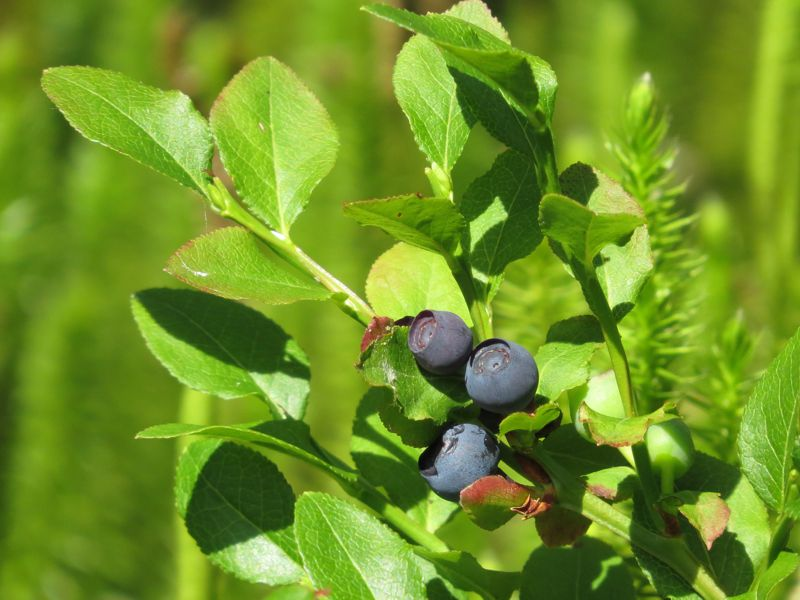

Heidelbeere
Vaccinium myrtillus
Ein nur im Sommer belaubter, kleiner Strauch mit kantigen Stängeln und blassrosa Blüte. Die blau bereiften, rotfleischigen Beeren werden von Vögeln und Säugetieren verzehrt. Nicht weniger beliebt sind die wohlschmeckenden Früchte beim Menschen.
Besonderheit: Bei Heidel- und RauschBeeren verfärben sich die Blätter vor dem Laubfall oft intensiv rot.